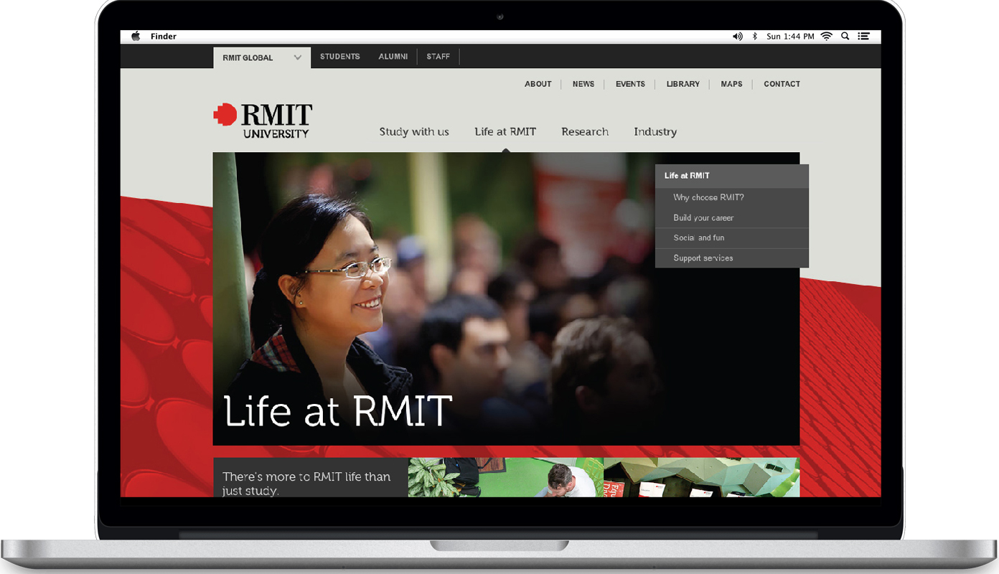
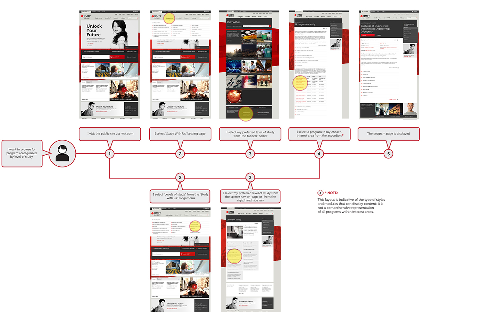
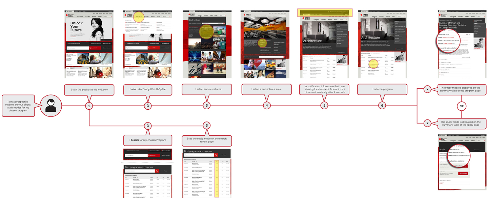

Transformation 2014
RMIT University, public website
Summary
I worked on translating a complex large scale website from a limited desktop only legacy designs into a contemporary fully responsive website. My role within the Transformation project was UI enhancements only. Adhering to the Senior UX and the RMIT GUI. I was lucky to participate in some of the gorilla testing performed on campus with iPads. Below is a small sample of user flows we were to design to and for... Translating Task Flows to User Flows. And most importantly AA Accessibility standard adherence. Creating the pixel perfect wireframes wasn't challenging enough for me - fresh out of Telstra where innovation and autonomous working was commonplace.

Find a Program by level of Study user flow

Find Study Modes available for a Program user flow
